silhouettes 18 images
 krea 2
krea 2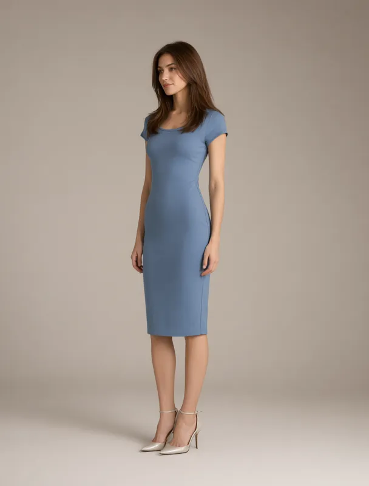
qwen image 2.1sheath dress
a full color full length fashion photograph in three-quarter view, with the whole body in frame from head to feet, lit by soft even studio light against a plain warm gray backdrop. the subject is a slim mixed race woman of about twenty five with light skin. her hair is chestnut brown, long blowout layers. she wears a plain dusty blue sheath dress. she stands relaxed, turned three quarters toward the left side of the frame, and gazes off to the left side of the frame, away from the camera.
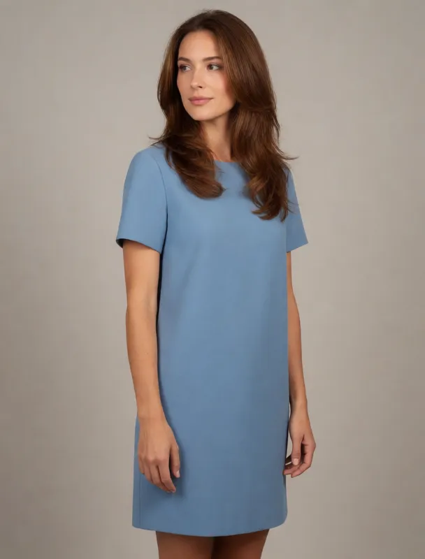
krea 2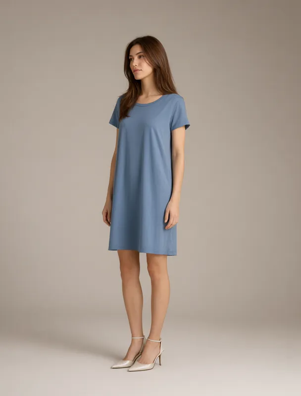
qwen image 2.1shift dress
a full color full length fashion photograph in three-quarter view, with the whole body in frame from head to feet, lit by soft even studio light against a plain warm gray backdrop. the subject is a slim mixed race woman of about twenty five with light skin. her hair is chestnut brown, long blowout layers. she wears a plain dusty blue shift dress. she stands relaxed, turned three quarters toward the left side of the frame, and gazes off to the left side of the frame, away from the camera.
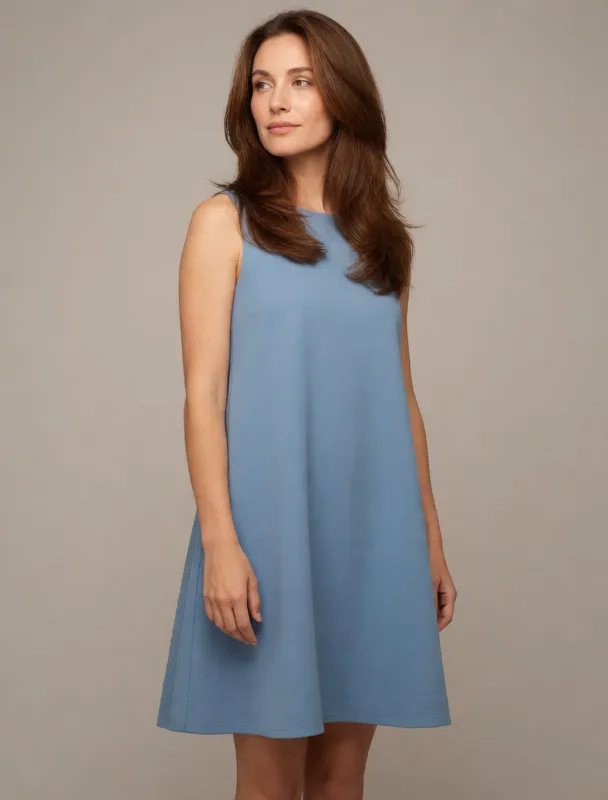
krea 2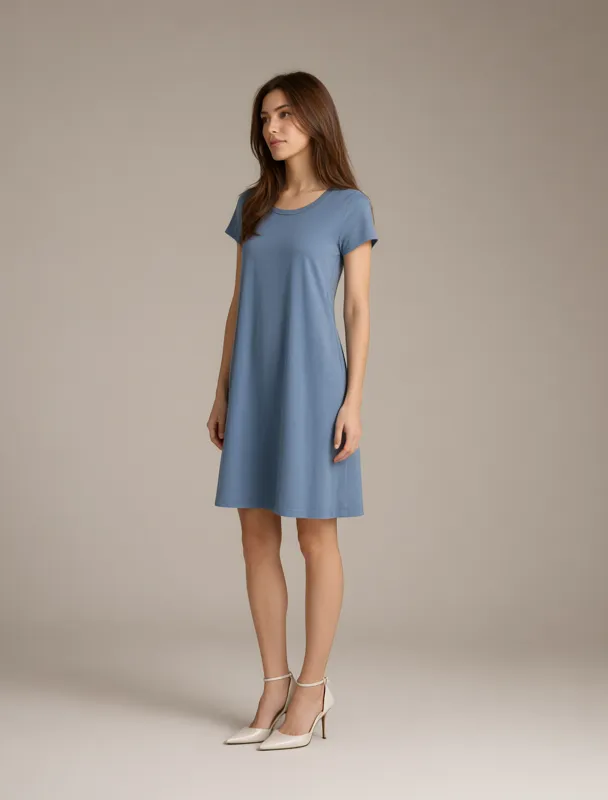
qwen image 2.1a line dress
a full color full length fashion photograph in three-quarter view, with the whole body in frame from head to feet, lit by soft even studio light against a plain warm gray backdrop. the subject is a slim mixed race woman of about twenty five with light skin. her hair is chestnut brown, long blowout layers. she wears a plain dusty blue a-line dress. she stands relaxed, turned three quarters toward the left side of the frame, and gazes off to the left side of the frame, away from the camera.
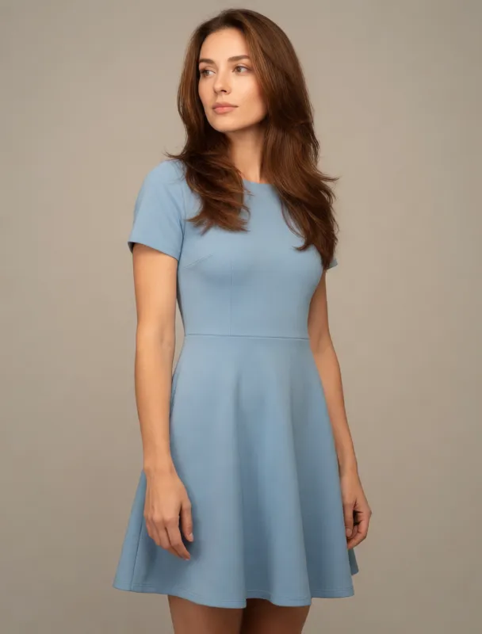
krea 2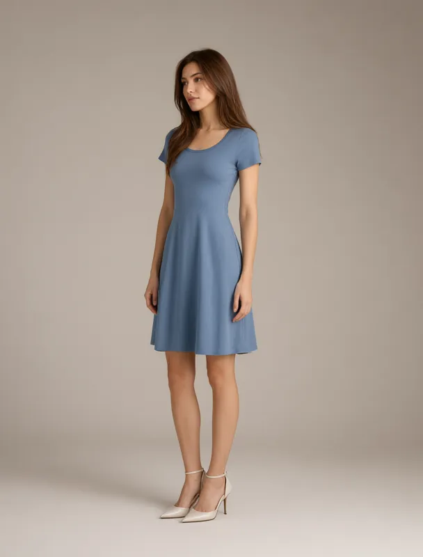
qwen image 2.1fit and flare dress
a full color full length fashion photograph in three-quarter view, with the whole body in frame from head to feet, lit by soft even studio light against a plain warm gray backdrop. the subject is a slim mixed race woman of about twenty five with light skin. her hair is chestnut brown, long blowout layers. she wears a plain dusty blue fit-and-flare dress. she stands relaxed, turned three quarters toward the left side of the frame, and gazes off to the left side of the frame, away from the camera.
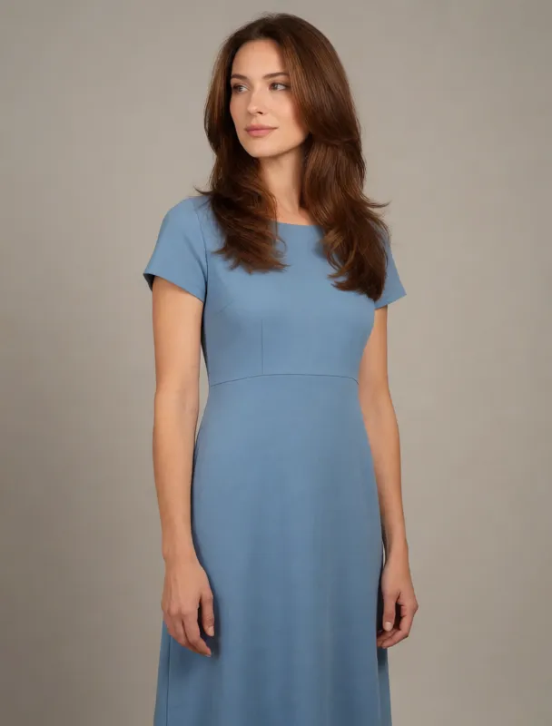
krea 2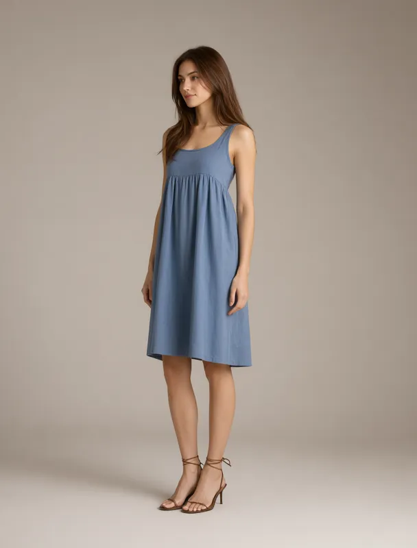
qwen image 2.1empire waist dress
a full color full length fashion photograph in three-quarter view, with the whole body in frame from head to feet, lit by soft even studio light against a plain warm gray backdrop. the subject is a slim mixed race woman of about twenty five with light skin. her hair is chestnut brown, long blowout layers. she wears a plain dusty blue empire waist dress. she stands relaxed, turned three quarters toward the left side of the frame, and gazes off to the left side of the frame, away from the camera.
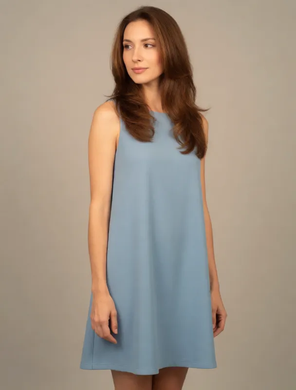
krea 2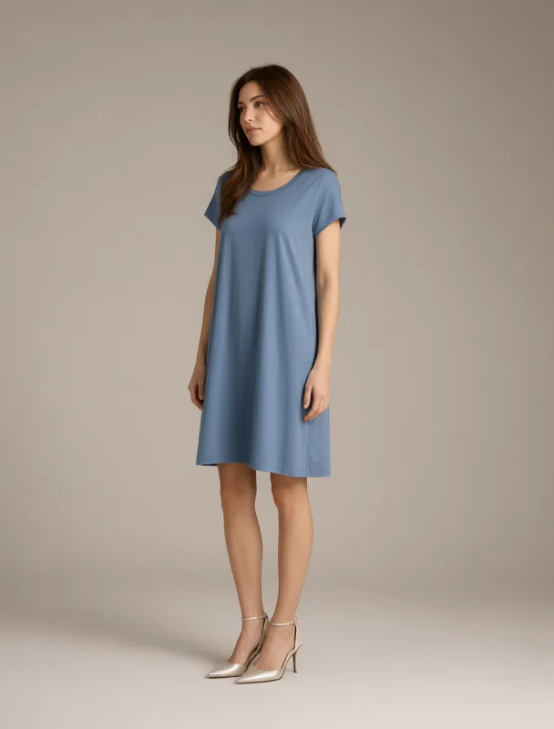
qwen image 2.1trapeze dress
a full color full length fashion photograph in three-quarter view, with the whole body in frame from head to feet, lit by soft even studio light against a plain warm gray backdrop. the subject is a slim mixed race woman of about twenty five with light skin. her hair is chestnut brown, long blowout layers. she wears a plain dusty blue trapeze dress. she stands relaxed, turned three quarters toward the left side of the frame, and gazes off to the left side of the frame, away from the camera.
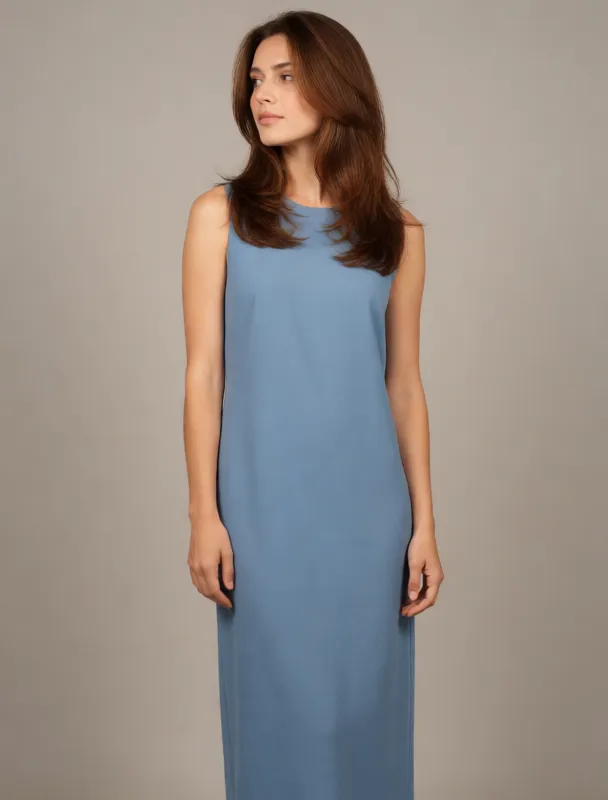
krea 2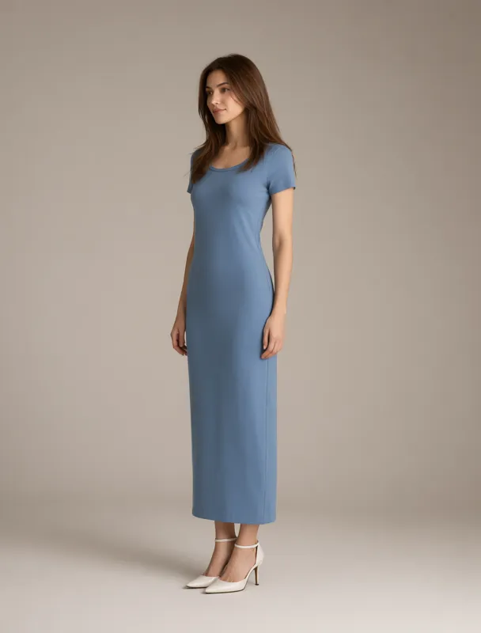
qwen image 2.1column dress
a full color full length fashion photograph in three-quarter view, with the whole body in frame from head to feet, lit by soft even studio light against a plain warm gray backdrop. the subject is a slim mixed race woman of about twenty five with light skin. her hair is chestnut brown, long blowout layers. she wears a plain dusty blue column dress. she stands relaxed, turned three quarters toward the left side of the frame, and gazes off to the left side of the frame, away from the camera.
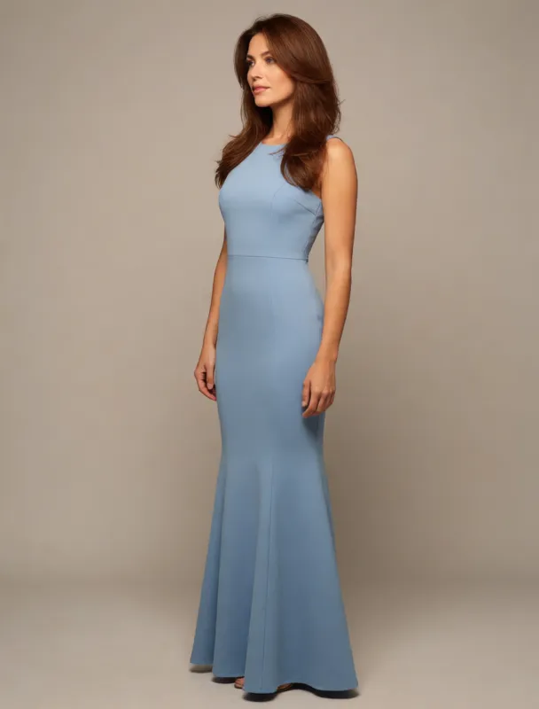
krea 2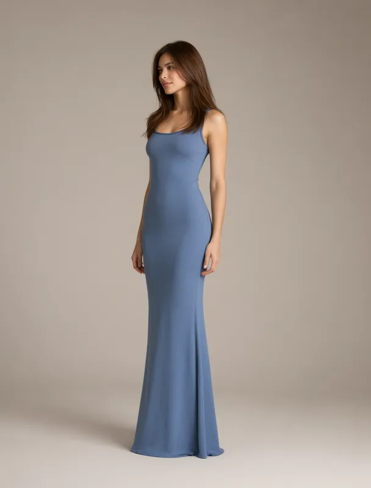
qwen image 2.1mermaid dress
a full color full length fashion photograph in three-quarter view, with the whole body in frame from head to feet, lit by soft even studio light against a plain warm gray backdrop. the subject is a slim mixed race woman of about twenty five with light skin. her hair is chestnut brown, long blowout layers. she wears a plain dusty blue mermaid dress. she stands relaxed, turned three quarters toward the left side of the frame, and gazes off to the left side of the frame, away from the camera.
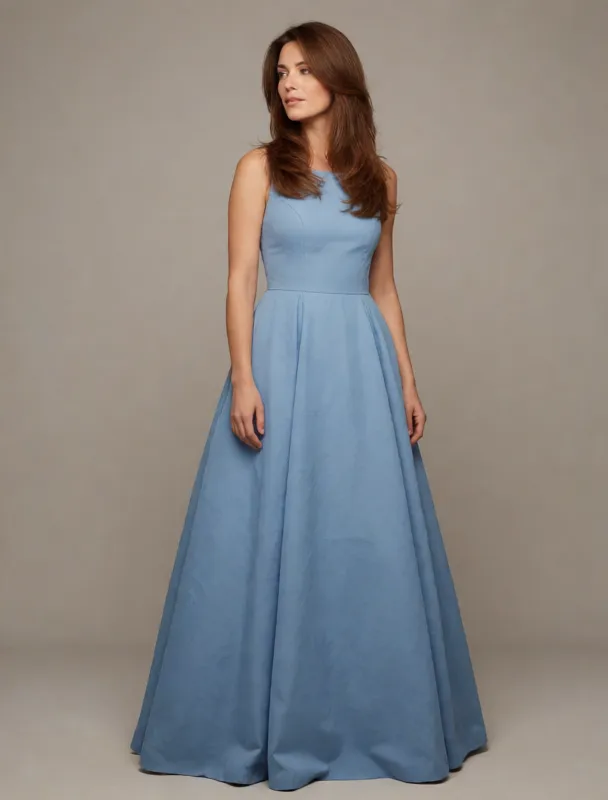
krea 2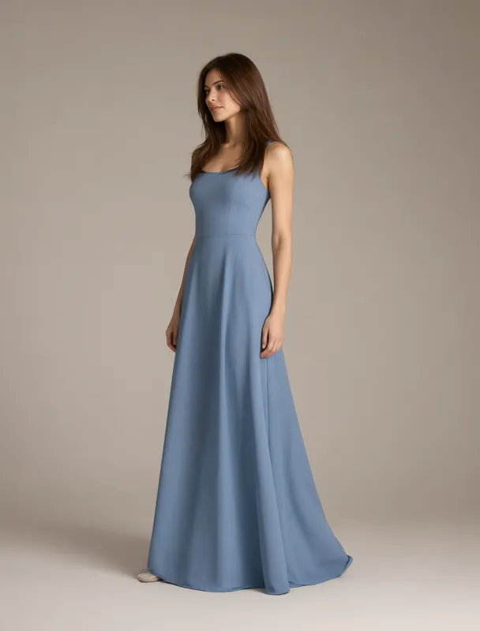
qwen image 2.1ball gown
a full color full length fashion photograph in three-quarter view, with the whole body in frame from head to feet, lit by soft even studio light against a plain warm gray backdrop. the subject is a slim mixed race woman of about twenty five with light skin. her hair is chestnut brown, long blowout layers. she wears a plain dusty blue ball gown. she stands relaxed, turned three quarters toward the left side of the frame, and gazes off to the left side of the frame, away from the camera.